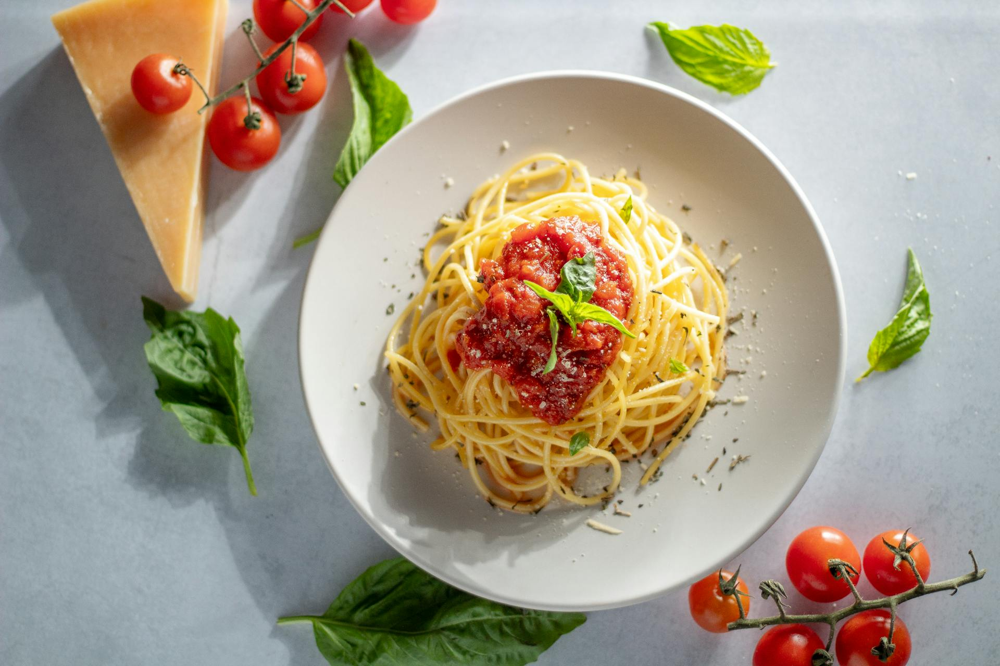

Tomato Spaghetti
Classic italian spaghetti with tomato: perfect as a quick snack at the lunchtime, or as a saturating dinner.
Ingredients
- Water 1 L
- Spaghetti 100g
- Tomatoes 150g
- Olive Oil 30g
- Parmesan 20g
- Salt 3g
- Pepper 1g
Steps
- Put the pan on low heat and add the olive oil. Then, add the tomatoes and let them gently break down. Season with salt and pepper to your liking.
- Boil a large pot of enough water to cover the spaghetti, and cook it al dente (usually 7 minutes, depending on the type of spaghetti).
- Drain the pasta (do not rinse it under water) and immediately add it to the pan with the prepared tomato sauce.
- Serve it on a plate and sprinkle with some Parmesan cheese. Enjoy!